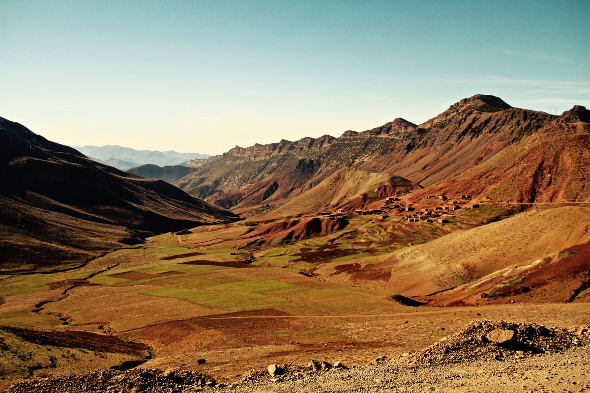
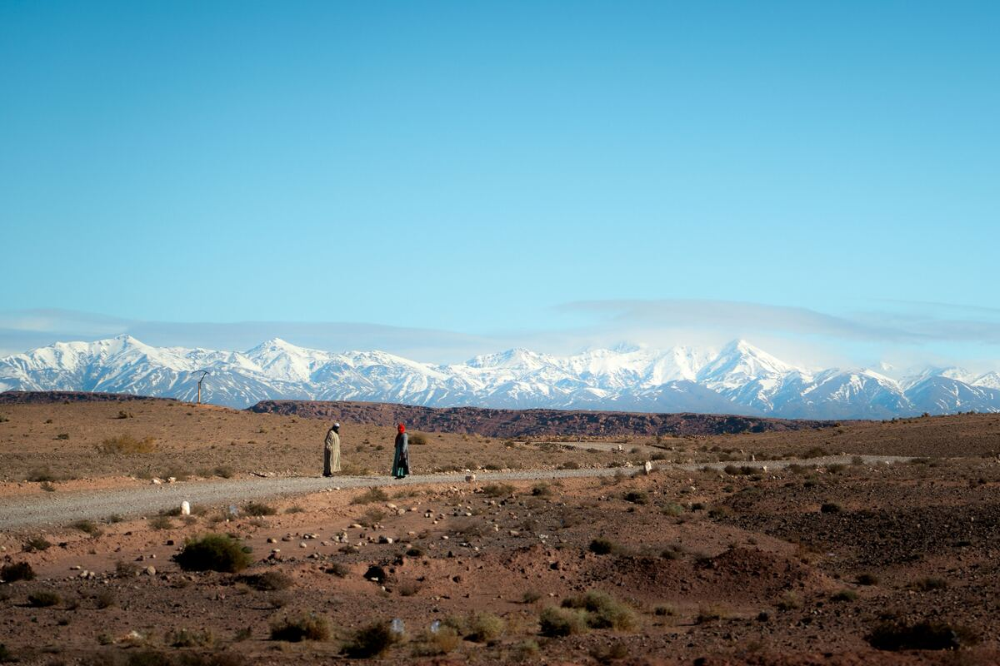
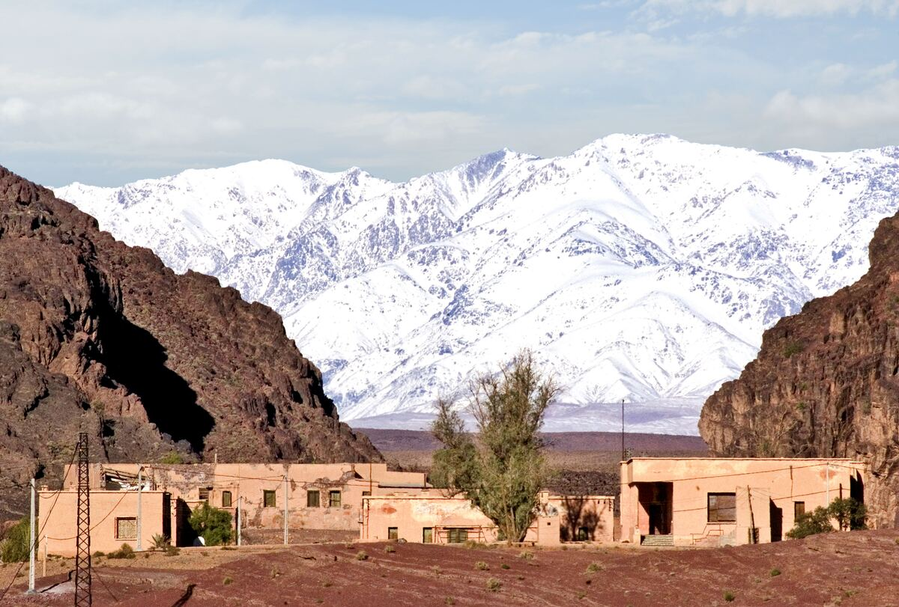
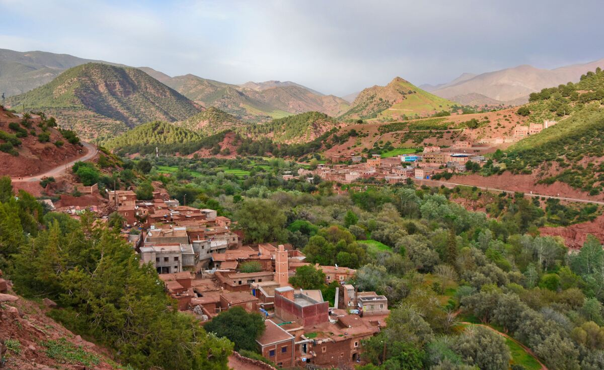

Atlas Crossing nasce dalla volontà di esplorare il Marocco attraverso il movimento, seguendo un percorso che collega le montagne dell'Alto Atlante alle dune del Sahara.
Non è una gara e non è una vacanza itinerante. È una traversata pensata per vivere il territorio in modo diretto, affrontando ogni giorno nuove distanze, nuovi dislivelli e ambienti completamente diversi tra loro.
In sette tappe attraverso villaggi montani, antiche kasbah, gole spettacolari e altipiani desertici. I 598 chilometri e i 5.150 metri di dislivello sono la dimensione fisica della spedizione — la parte più importante si trova tra una tappa e l'altra, nell'adattarsi al percorso e osservare il territorio con tempi diversi da quelli del turismo tradizionale.
Alcune destinazioni non si comprendono osservandole da lontano. Bisogna attraversarle.
La mappa mostra l'intero tracciato. Scorri per entrare nelle singole tappe, dai passi montani fino alle dune del deserto.
↓ Scorri per iniziareBriefing e messa a punto dei mezzi nella Medina, prima del via.
Prima ascesa verso l'Alto Atlante: piste dure, pendenze costanti, quota che sale in fretta.
Discesa lungo il canyon della Valle dell'Ounila, tra rocce rosse e villaggi fortificati di fango.
La tappa più dura: i tornanti in quota sulle pareti della gola.
Traversata tecnica su fondo sconnesso, chiusa dentro le pareti verticali del Todra.
Trasferimento lungo e veloce: le montagne lasciano spazio ai primi falsipiani desertici.
Le piste sabbiose portano alle dune dell'Erg Chebbi, alle porte del Sahara.
Dall'Alto Atlante alle sabbie del Sahara: sette tappe racchiuse in un unico itinerario.




Tutto quello che serve sapere prima di candidarti — i dettagli definitivi ti arrivano dopo la conferma dell'iscrizione.
Il volo andata/ritorno Milano Malpensa → Marrakech è incluso nella quota (vedi "La quota comprende" più sotto). Ritrovo presso l'Aeroporto di Milano Malpensa 3 ore prima della partenza del volo; l'orario esatto e il terminal verranno confermati via email dopo la conferma dell'iscrizione.
Per l'ingresso in Marocco è obbligatorio il passaporto: la sola carta d'identità non è accettata, anche se in corso di validità. Il passaporto deve avere una validità residua di almeno 6 mesi dalla data di rientro e almeno una pagina libera per i timbri. Nessun visto richiesto per cittadini italiani in soggiorno turistico fino a 90 giorni. Nessuna vaccinazione obbligatoria; consigliata comunque un'assicurazione di viaggio con copertura medica (inclusa nella quota, vedi sotto). Se non hai cittadinanza italiana, verifica i requisiti specifici per il tuo paese prima di candidarti.
Fonte: Farnesina — Viaggiare Sicuri, aggiornato 2026.Difficoltà ●●●●○ (4/5). Serve una buona base di allenamento in bici su più giorni consecutivi e dimestichezza con percorsi sterrati/gravel in quota. Non è una gara: il ritmo è pensato per il gruppo, ma bisogna arrivare preparati.
Acconto del 25% alla conferma dell'iscrizione — blocca il posto e il prezzo, che resta protetto da eventuali aumenti successivi. Saldo dell'importo restante entro 30 giorni prima della partenza. Al momento è accettato solo il bonifico bancario; le coordinate vengono inviate dopo la conferma della candidatura.
In caso di ritiro, la penale è calcolata sui giorni che mancano alla partenza: oltre 60 giorni: trattenuta la sola quota di apertura pratica · da 59 a 30 giorni: 25% della quota · da 29 a 15 giorni: 50% · da 14 a 7 giorni: 75% · sotto i 7 giorni o mancata presentazione: 100%. Il prezzo resta comunque bloccato dal momento della conferma, indipendentemente da eventuali aumenti successivi. La spedizione parte con un massimo di 8 persone. Se il numero minimo necessario per partire (6) non viene raggiunto entro 45 giorni dalla partenza, Oechslin Outdoor può annullare la spedizione con rimborso integrale di quanto versato.
Tutto ciò che serve per affrontare la traversata è incluso nel prezzo.
Prenota entro la scadenza e risparmi 350 € sulla quota standard.
A persona — spedizione limitata a 8 viaggiatori più la guida.
Tutto ciò che serve per affrontare la traversata in sicurezza, incluso nella quota.
Bici selezionate per il misto montagna-deserto, revisionate prima della partenza.
Doppio strato, pensate per le notti in quota tra Atlante e altipiani.
Action cam, supporti manubrio e kit fotografico per documentare il percorso.
GPS dedicato con tracce precaricate e mappe offline, nessuna dipendenza dalla rete.
Kit riparazioni completo fornito a ogni partecipante, più assistenza sul percorso.
Compila il form qui sotto — ti risponderò via email con il programma completo.